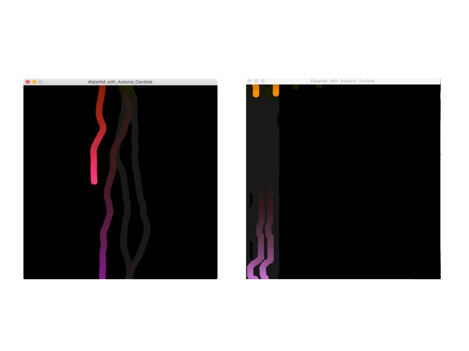
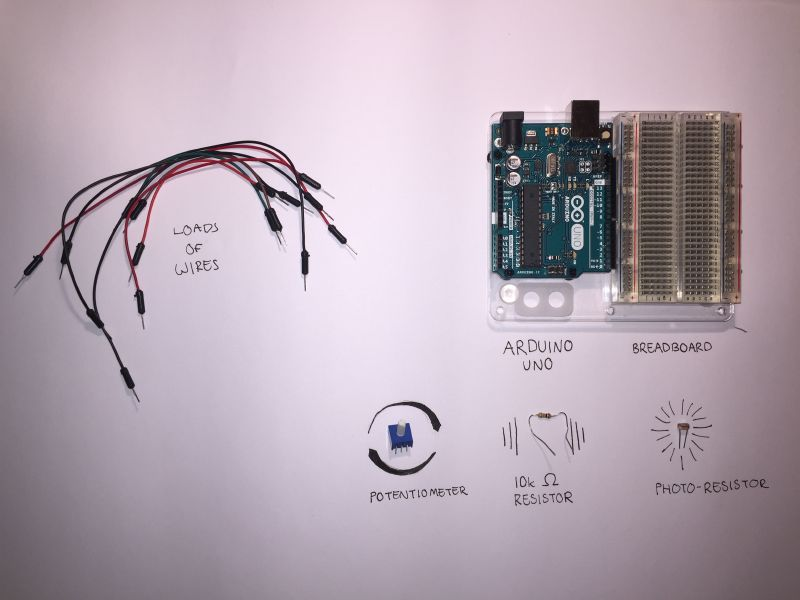
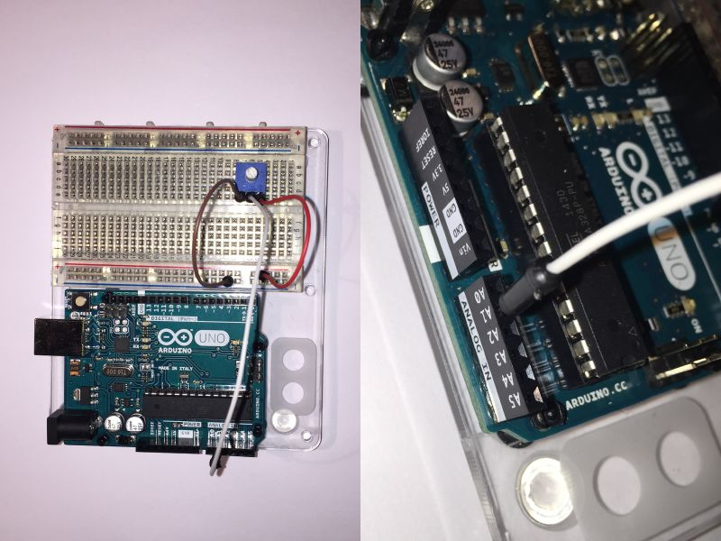
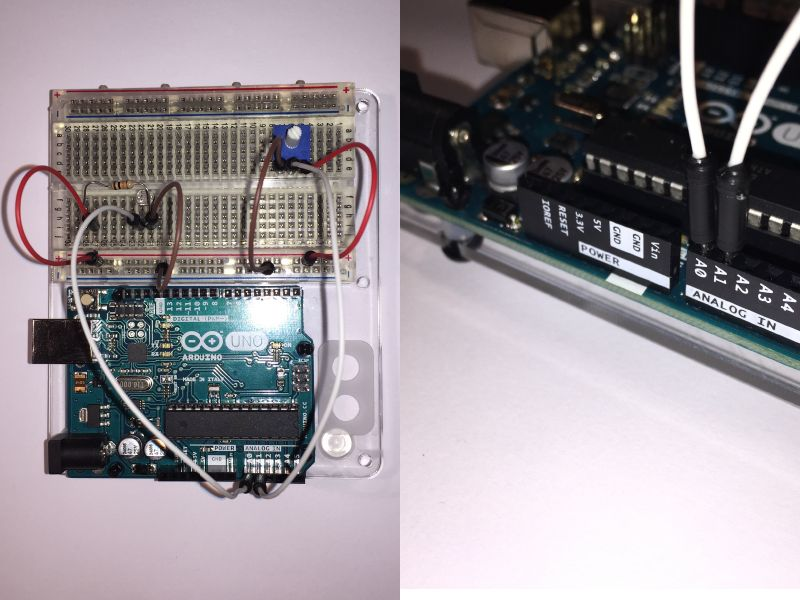
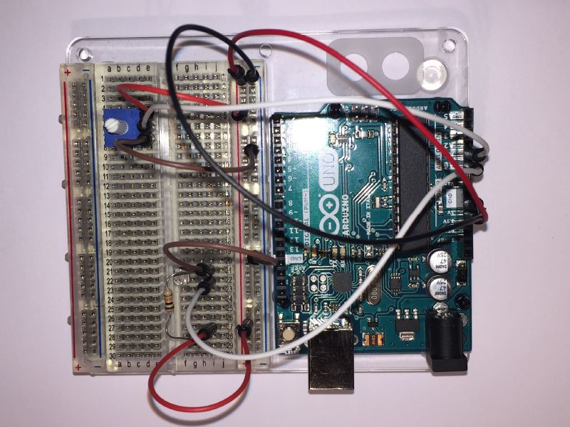
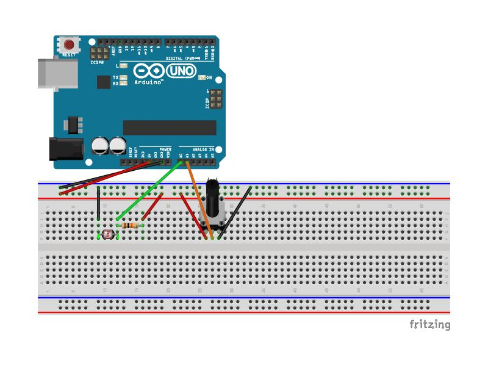
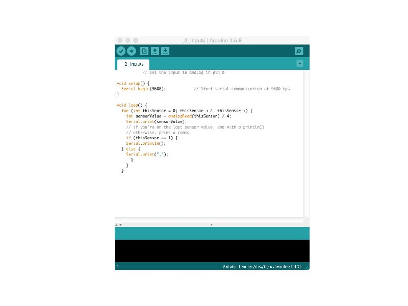
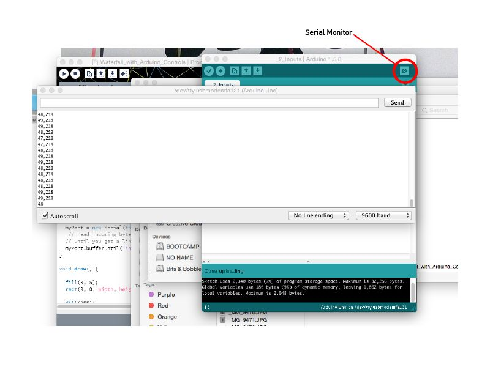
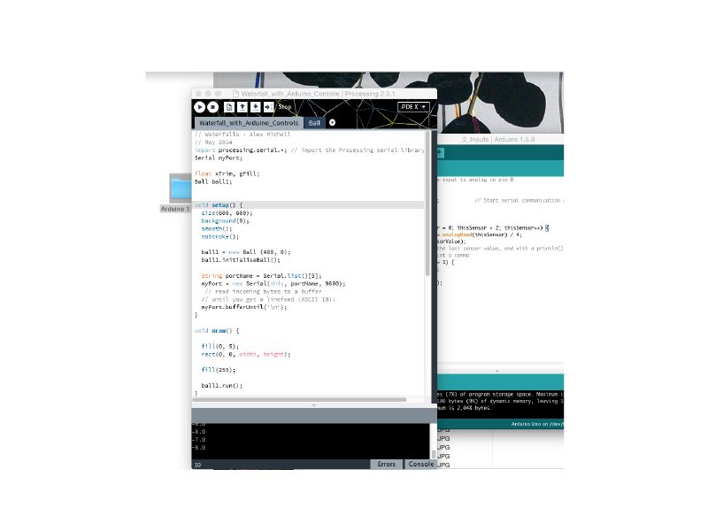

Waterval¶
In deze instructie gaan we een simpel Arduino circuit maken en gebruiken om een balletje in Processing te besturen.
Bron: https://www.instructables.com/id/How-to-control-a-Processing-sketch-with-two-Arduin/
Benodigdheden¶
Wat heb je nodig?
1 x Arduino bordje (de instructie gaat uit van een Uno)
1 x insteek bordje
1 x lichtgevoelige weerstand
1 x 10kOhm weerstand (kleurcode bruin-zwart-oranje)
1 x potmeter
handje vol insteek draadjes
Stappen¶
1: de potmeter verbinden met het insteekbord¶
Je hebt hier 3 insteek draadjes voor nodig. Bevestig de positieve en negatieve draadjes (rood en bruin in het plaatje) met de plus- en min-banen.
Het derde draadje, in het midden op de potmeter, stuurt informatie over de stand van de potmeter naar de Arduino en moet aan poort A1 (analog A1) worden aangesloten.
2: de lichtgevoelige weerstand aansluiten¶
We gaan nu de lichtgevoelige weerstand aansluiten.
verbind de plus-baan met de 10kOhm weerstand
verbind de het draadje van de weerstand met die van de lichtgevoelige weerstand en met poort A0 (analog A0) op het Arduino bordje
verbind het draadje aan de andere kant van de lichtgevoelige weerstand met de min-baan
3: de voeding aansluiten¶
Het zwarte draadje moet aan een van de aard aansluitingen (gnd) van de Arduino verbonden worden en de min-baan. Het rode draadje moet aan de 5V aansluiting van de Arduino en de plus-baan verbonden worden.
4: schematisch overzicht¶
Voor als je vast was komen te zitten!
5: open de Arduino IDE¶
Download de Arduino code en pak deze uit.
Open bestand 2_Inputs/_2_Inputs.ino in de Arduino IDE.
6: controleer het bestand en je verbindingen¶
Controleer dat je computer verbonden is met de USB poort van de Arduino.
Open de Serial Monitor om te controleren dat de verbinding met de Arduino goed is opgezet. Je zou een lijst met 2 getalletjes tussen 0 en 255 voorbij moeten zien komen. Draai aan de potmeter of bedek de lichtgevoelige weerstand om te zien of de getalletjes veranderen.
7: open de Processing IDE¶
We zijn bijna klaar…
Laad het Processing script met naam Waterfall_with_Arduino_Controls/Waterfall_with_Arduino_Controls.pde.
Druk op de speelknop in de linker bovenhoek van de Processing IDE en je zou een bal op het scherm naar beneden moeten zien bewegen.
8: veel plezier!¶
Je kunt nu het Processing script besturen met de twee externe ingangen op de Arduino: de lichtgevoelige weerstand en de potmeter.
Probeer eens wat waarden in het Processing script aan te passen of wissel tussen de weerstand en de potmeter. Het hele idee is om creatief te zijn en je computer eens op een andere manier te bedienen dan met een toetsenbord of muis.